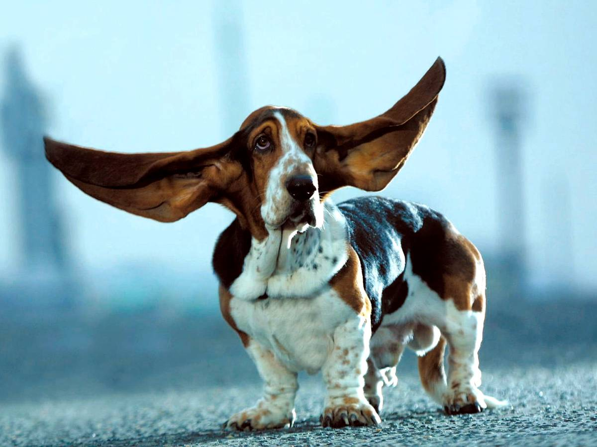

Бассет
- Продолжительность жизни: 8-12 лет
- Группа: Комнатно-декоративная
- Окрас шерсти: лимонный (белый и темно-желтый); рыжий с белым; коричневато-красный; черный с белым;
трехцветный (белое тело с черными отметинами при коричневой голове) или блю де гасконь (Bleu De Gascogne).
- Длина шерсти: короткая.
- Линька: умеренная.
- Рост : 33-38 см
Бассет – единственный потомок, доживший до наших дней, таксы с великолепным обонянием. Его шерсть гладкая и короткая.
Он обладает весьма необычным строением тела: маленькие, массивные лапы и длинное, морщинистое, неуклюжее тело.
На протяжении многих веков бассеты сопровождали на охоте своих хозяев. В силу своего строения он спокойно пробирался в барсучьи,
лисьи и заячьи норы. Бассет обладает превосходным обонянием.
Любая игра может быть забавой для всей семьи, в том числе и для бассета. Эта порода отличается добротой,
преданностью и большой привязанностью к своим хозяевам. Если Вы позволите бассету спать в кровати, рядом с Вами,
он будет безумно счастлив.
В наше время бассет может жить как дома, так и на улице. Но в начале 16 века (именно в это время была выведена порода)
он жил на улице, как и любая другая охотничья порода. Если у Вас маленькая квартира, то, увы, бассет – не для Вас.
Ему нужно много пространства, где он бы мог гулять, бегать и выполнять определенные упражнения.
